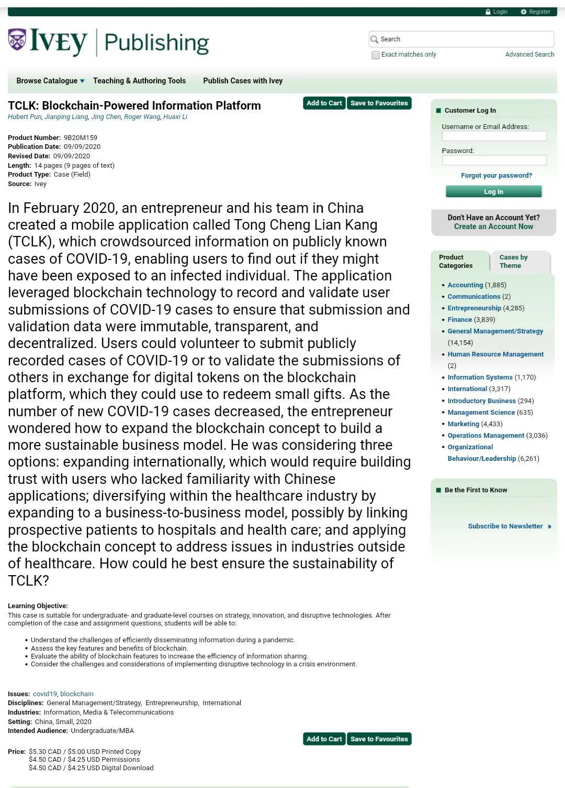
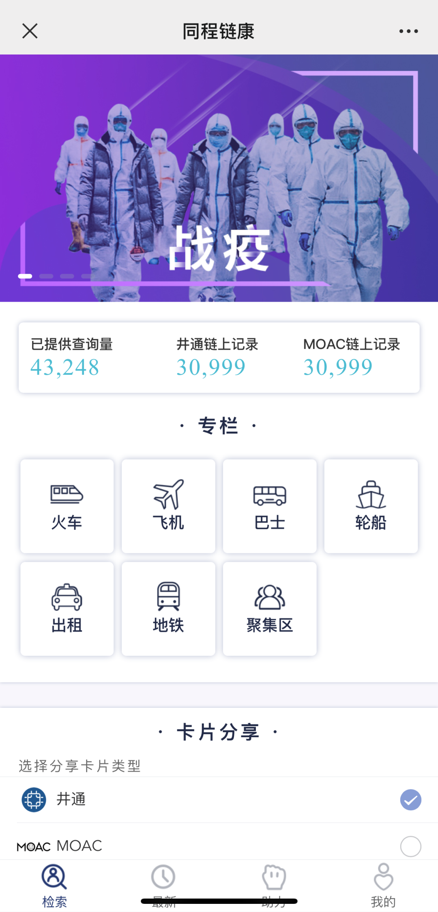

<!DOCTYPE html>


<html lang="zh-CN">


<head>
  <meta charset="utf-8" />
   
  <meta name="keywords" content="翟天野 天野 翟天野博客 tianye zhaitianye" />
   
  <meta name="description" content="The seeker of the world" />
  
  <meta name="viewport" content="width=device-width, initial-scale=1, maximum-scale=1" />
  <title>
    桂花伺开季-喜讯万里来 |  Tianye Blog
  </title>
  <meta name="generator" content="hexo-theme-ayer">
  
  <link rel="shortcut icon" href="/favicon.ico" />
  
  
<link rel="stylesheet" href="/dist/main.css">

  
<link rel="stylesheet" href="/comm/remixicon.min.css">

  
<link rel="stylesheet" href="/css/custom.css">

  
  
<script src="/comm/pace.min.js"></script>

  
  

  
<script>
var _hmt = _hmt || [];
(function() {
	var hm = document.createElement("script");
	hm.src = "https://hm.baidu.com/hm.js?a65f4359920e6c4b5b2b6d0519751045";
	var s = document.getElementsByTagName("script")[0]; 
	s.parentNode.insertBefore(hm, s);
})();
</script>


</head>

</html>

<body>
  <div id="app">
    
      
      <canvas width="1777" height="841"
        style="position: fixed; left: 0px; top: 0px; z-index: 99999; pointer-events: none;"></canvas>
      
    <main class="content on">
      <section class="outer">
  <article
  id="post-桂花伺开季-喜讯万里来"
  class="article article-type-post"
  itemscope
  itemprop="blogPost"
  data-scroll-reveal
>
  <div class="article-inner">
    
    <header class="article-header">
       
<h1 class="article-title sea-center" style="border-left:0" itemprop="name">
  桂花伺开季-喜讯万里来
</h1>
 

    </header>
     
    <div class="article-meta">
      <a href="/2020/09/%E6%A1%82%E8%8A%B1%E4%BC%BA%E5%BC%80%E5%AD%A3-%E5%96%9C%E8%AE%AF%E4%B8%87%E9%87%8C%E6%9D%A5/" class="article-date">
  <time datetime="2020-09-10T13:20:37.000Z" itemprop="datePublished">2020-09-10</time>
</a> 
  <div class="article-category">
    <a class="article-category-link" href="/categories/%E4%B8%AA%E4%BA%BA%E9%9A%8F%E7%AC%94/">个人随笔</a>
  </div>
  
<div class="word_count">
    <span class="post-time">
        <span class="post-meta-item-icon">
            <i class="ri-quill-pen-line"></i>
            <span class="post-meta-item-text"> 字数统计:</span>
            <span class="post-count">1.9k</span>
        </span>
    </span>

    <span class="post-time">
        &nbsp; | &nbsp;
        <span class="post-meta-item-icon">
            <i class="ri-book-open-line"></i>
            <span class="post-meta-item-text"> 阅读时长≈</span>
            <span class="post-count">6 分钟</span>
        </span>
    </span>
</div>
 
    </div>
      
    <div class="tocbot"></div>


  
    <div class="article-entry" itemprop="articleBody">
       
  <h2 id="前言"><a href="#前言" class="headerlink" title="前言"></a>前言</h2><p>今年年初疫情严重，公司做了一款结合区块链的疫情工具，名字叫同程链康<sup id="fnref:2"><a href="#fn:2" rel="footnote">2</a></sup>。</p>
<p>此工具从架构设计，到开发都是我做的主力，此工具被案例库收藏。</p>
<p>心里还是比较开心的。(๑╹ヮ╹๑)ﾉ</p>
<h2 id="正文"><a href="#正文" class="headerlink" title="正文"></a>正文</h2><p>2020年9月9日，井通至尚科技基于井通Jingtum Blockchain及MOAC Chain参与开发，加拿大Ivey商学院Hubert Pun教授、中山大学Jianping Liang副教授等合作者撰写的英文商科教学案例“同程链康:Blockchain-Powered Information Platform”被国际著名案例研究机构“毅伟商业案例库（Ivey Publishing）”在线出版发行（案例编号：<a href="https://www.iveycases.com/ProductView.aspx?id=111547" target="_blank" rel="noopener">9B20M159</a>）</p>
<p></p>
<p>毅伟商业案例库与哈佛案例库、欧洲案例库并称为“国际三大商业案例库”。其代表了全球教学案例出版的最高标准，是全球领先的商业案例提供商。毅伟商业案例不仅被全球各大商学院购买并广泛使用，其案例教学也是商科本科、MBA、EMBA教学中最为常用的教学方式，在全球商学院的AACSB(国际高等商学院协会)和AMBA(英国工商管理硕士协会)认证中占有非常大的权重。</p>
<p>“同程链康:Blockchain-Powered Information Platform”被毅伟商业案例库在线出版发行，表明井通Jingtum及MOAC区块链应用成果受到海外顶尖商学院的关注和认可，也体现了井通至尚团队在高水平教学案例开发方面取得的重要进展。</p>
<p></p>
<p>“同程链康:Blockchain-Powered Information Platform”是一款基于区块链的2019-nCoV新型肺炎确诊患者相同行程查询工具。该工具依靠来自全国各地的人民群众志愿者，自发式地从多个官方渠道（各地卫健委、政府网站、官方公众号等约1150个发布来源）收集、梳理、提交并审核确诊患者行程详情，便于大家自行查询历史交通工具的疫情情况，做到早预防、早隔离、早救治。</p>
<ul>
<li><p>该工具依靠分布式协作的“助力”版块，使得其在同类工具中，数据量最完整，自发参与贡献人数最多，更新时间最长，数据准确率最高，验证了分布式协作在应对长期需求时的潜力及可行性，也为基层社区自治提供了一定的参考。</p>
</li>
<li><p>该工具汇集了各种官方渠道的新冠患者确诊信息，打通了信息孤岛，实现了疫情数据实时共享。</p>
</li>
<li><p>该工具利用了区块链技术，助力人人能够安全参与到疫情信息的上传和核实过程中去。同时，因为录入信息、审核信息等行为均记录在了区块链上不可篡改，也记录下了参与者对该工具以及对帮助他人疫情防控的贡献，这提高了贡献参与者的参与感和内心成就感。</p>
</li>
<li><p>该工具其实只是抗疫过程的一小部分，确切地说，是关于疾控系统流行性病学调查结果的信息披露后的同程查询工具中的一个。在贡献群众的搜录实践中发现，虽然疾控的流调有流程规范，但是各地的流调水平，却是参差不齐的。再结合各个地方政府对患者隐私权保护的尺度不一，公布的信息完整度上差别还是蛮大的。举例：A患者在B地四处活动，然后坐火车经C、D、E到F地后被确诊，就会看到有些案例会有两地之间发函互助，有些则在公开信息披露上反映出自扫门前雪的情形。针对这个现象，该工具实现了应搜尽搜，应录尽录，应审尽审。相信，疫情过后疾控这套系统也会变革升级，更加全方位无死角。</p>
</li>
<li><p>与其他的确诊患者相同行程查询工具所不同的，是该工具引入了区块链理念和技术。区块链是一种技术，也是一种生产关系，基层社区治理是它非常重要的实践领域。该工具的探索，或将开辟一条基层社区治理现代化的新路。</p>
</li>
<li><p>在该工具中，无论是分布式协作的“助力”版块，还是公开透明的记录每一条助力/审核数据，还是依靠这些公开透明的数据科学评价每一位参与者的付出和贡献以便即时结算相应积分奖励，都渗透着区块链去中心化和不可篡改核心理念的影子。</p>
</li>
<li><p>该工具的分布式录入、分布式审核机制准确性高，可扩展性强。</p>
</li>
</ul>
<ol>
<li><p>准确性高：在其他同类同程查询工具中，数据录入是中心化的，审核也是中心化的，信息是否发布多由管理员拍板定夺，这就导致了一定程度上可能因为管理员的认知原因误判了某些患者行程数据。而该工具不同，同一条信息，至少要由N个不同背景不同认知且相互独立的人来审核，这增加了该患者行程信息的准确性和真实可信度，降低了管理员的人为因素干扰。</p>
</li>
<li><p>可扩展性强：在其他同类同程查询工具中，管理员的角色很重要，然而管理员这个中心所能处理的数据量是有上限的。假如将其他同类同程查询工具应用到全球，确诊患者百万级数据量，则其患者行程要达到千万级数据量（一个患者不止去过一个地），这时就需要成千上万的管理员才行，扩展所需的人力成本极其高昂。而只要有少量的奖励支撑，该工具的分布式录入、分布式审核机制（区块链理念）即可自发运转，达成更高效率、更大范围的协作。相对其他同类同程查询工具而言，该工具的扩展性强、成本低。</p>
</li>
</ol>
<p>实践证明，该工具成功进行了官方数据的分布式收集，验证了分布式协作在应对长期需求时的潜力及可行性。</p>
<p>来自全国各地的众多群众每一个都普普通通毫不起眼，然而正是这些默默无闻的群众，不怕录入工作的枯燥和耗费精力，持续战斗至今，收集整理并审核了来自约1150个信息发布渠道的3万多条患者同程信息，形成了最终的便捷的确诊患者相同行程查询工具。</p>
<p>区块链既然可以助力分布式协作，形成人人自发助力人人认真审核的良好生态循环，那么自然也可以应用到基层社会治理中，激发城乡社区人员的参与意识，自发参与疫情防控。</p>
<div id="footnotes"><hr><div id="footnotelist"><ol style="list-style:none; padding-left: 0;"><li id="fn:1"><span style="display: inline-block; vertical-align: top; padding-right: 10px;">1.</span><span style="display: inline-block; vertical-align: top;">转载井通至尚微信公众号 <a href="https://mp.weixin.qq.com/s/rRyx2TY0dXTFR3L_Xnl7fg" target="_blank" rel="noopener">桂花伺开季，喜讯万里来</a></span><a href="#fnref:1" rev="footnote"> ↩</a></li><li id="fn:2"><span style="display: inline-block; vertical-align: top; padding-right: 10px;">2.</span><span style="display: inline-block; vertical-align: top;"><strong>同程链康</strong> 访问地址，请在微信端打开 <a href="http://epidemic.jingtumzs.com/#/home" target="_blank" rel="noopener">http://epidemic.jingtumzs.com/#/home</a></span><a href="#fnref:2" rev="footnote"> ↩</a></li></ol></div></div> 
      <!-- reward -->
      
    </div>
    

    <!-- copyright -->
    
    <div class="declare">
      <ul class="post-copyright">
        <li>
          <i class="ri-copyright-line"></i>
          <strong>版权声明： </strong>
          本博客所有文章，未经许可，任何单位及个人不得做营利性使用！如有侵权请联系作者。
        </li>
      </ul>
    </div>
    
    <footer class="article-footer">
       
  <ul class="article-tag-list" itemprop="keywords"><li class="article-tag-list-item"><a class="article-tag-list-link" href="/tags/%E4%B8%AA%E4%BA%BA%E9%9A%8F%E7%AC%94/" rel="tag">个人随笔</a></li></ul>

    </footer>
  </div>

   
  <nav class="article-nav">
    
    
      <a href="/2020/08/ES2020%E6%96%B0%E7%89%B9%E6%80%A7/" class="article-nav-link">
        <strong class="article-nav-caption">下一篇</strong>
        <div class="article-nav-title">ES2020新特性</div>
      </a>
    
  </nav>

  
     
</article>

</section>
      <footer class="footer">
  <div class="outer">
    <ul>
      <li>
        Copyrights &copy;
        2015-2020
        <i class="ri-heart-fill heart_icon"></i> 翟天野
      </li>
    </ul>
    <ul>
      <li>
        
      </li>
    </ul>
    <ul>
      <li>
        
      </li>
    </ul>
    <ul>
      
    </ul>
    <ul>
      <li>
        <!-- cnzz统计 -->
        
      </li>
    </ul>
  </div>
</footer>
      <div class="float_btns">
        <div class="totop" id="totop">
  <i class="ri-arrow-up-line"></i>
</div>

<div class="todark" id="todark">
  <i class="ri-moon-line"></i>
</div>

      </div>
    </main>
    <aside class="sidebar on">
      <button class="navbar-toggle"></button>
<nav class="navbar">
  
  <div class="logo">
    <a href="/"></a>
  </div>
  
  <ul class="nav nav-main">
    
    <li class="nav-item">
      <a class="nav-item-link" href="/">主页</a>
    </li>
    
    <li class="nav-item">
      <a class="nav-item-link" href="/archives">归档</a>
    </li>
    
    <li class="nav-item">
      <a class="nav-item-link" href="/categories">分类</a>
    </li>
    
    <li class="nav-item">
      <a class="nav-item-link" href="/tags">标签</a>
    </li>
    
    <li class="nav-item">
      <a class="nav-item-link" href="/about">关于</a>
    </li>
    
  </ul>
</nav>
<nav class="navbar navbar-bottom">
  <ul class="nav">
    <li class="nav-item">
      
      
    </li>
  </ul>
</nav>
<div class="search-form-wrap">
  <div class="local-search local-search-plugin">
  <input type="search" id="local-search-input" class="local-search-input" placeholder="Search...">
  <div id="local-search-result" class="local-search-result"></div>
</div>
</div>
    </aside>
    <script>
      if (window.matchMedia("(max-width: 768px)").matches) {
        document.querySelector('.content').classList.remove('on');
        document.querySelector('.sidebar').classList.remove('on');
      }
    </script>
    <div id="mask"></div>

<!-- #reward -->
<div id="reward">
  <span class="close"><i class="ri-close-line"></i></span>
  <p class="reward-p"><i class="ri-cup-line"></i>请我喝杯咖啡吧~</p>
  <div class="reward-box">
    
    
  </div>
</div>
    
<script src="/js/jquery-2.0.3.min.js"></script>


<script src="/js/lazyload.min.js"></script>


<!-- Tocbot -->


<script src="/js/tocbot.min.js"></script>

<script>
  
  if(document.getElementsByClassName("tocbot").length !== 0){
    tocbot.init({
      tocSelector: '.tocbot',
      contentSelector: '.article-entry',
      headingSelector: 'h1, h2, h3, h4, h5, h6',
      hasInnerContainers: true,
      scrollSmooth: true,
      scrollContainer: 'main',
      positionFixedSelector: '.tocbot',
      positionFixedClass: 'is-position-fixed',
      fixedSidebarOffset: 'auto'
    });
  }
</script>

<script src="/comm/jquery.modal.min.js"></script>
<link rel="stylesheet" href="/comm/jquery.modal.min.css">
<script src="/comm/jquery.justifiedGallery.min.js"></script>

<script src="/dist/main.js"></script>

<!-- ImageViewer -->

<!-- Root element of PhotoSwipe. Must have class pswp. -->
<div class="pswp" tabindex="-1" role="dialog" aria-hidden="true">

    <!-- Background of PhotoSwipe. 
         It's a separate element as animating opacity is faster than rgba(). -->
    <div class="pswp__bg"></div>

    <!-- Slides wrapper with overflow:hidden. -->
    <div class="pswp__scroll-wrap">

        <!-- Container that holds slides. 
            PhotoSwipe keeps only 3 of them in the DOM to save memory.
            Don't modify these 3 pswp__item elements, data is added later on. -->
        <div class="pswp__container">
            <div class="pswp__item"></div>
            <div class="pswp__item"></div>
            <div class="pswp__item"></div>
        </div>

        <!-- Default (PhotoSwipeUI_Default) interface on top of sliding area. Can be changed. -->
        <div class="pswp__ui pswp__ui--hidden">

            <div class="pswp__top-bar">

                <!--  Controls are self-explanatory. Order can be changed. -->

                <div class="pswp__counter"></div>

                <button class="pswp__button pswp__button--close" title="Close (Esc)"></button>

                <button class="pswp__button pswp__button--share" style="display:none" title="Share"></button>

                <button class="pswp__button pswp__button--fs" title="Toggle fullscreen"></button>

                <button class="pswp__button pswp__button--zoom" title="Zoom in/out"></button>

                <!-- Preloader demo http://codepen.io/dimsemenov/pen/yyBWoR -->
                <!-- element will get class pswp__preloader--active when preloader is running -->
                <div class="pswp__preloader">
                    <div class="pswp__preloader__icn">
                        <div class="pswp__preloader__cut">
                            <div class="pswp__preloader__donut"></div>
                        </div>
                    </div>
                </div>
            </div>

            <div class="pswp__share-modal pswp__share-modal--hidden pswp__single-tap">
                <div class="pswp__share-tooltip"></div>
            </div>

            <button class="pswp__button pswp__button--arrow--left" title="Previous (arrow left)">
            </button>

            <button class="pswp__button pswp__button--arrow--right" title="Next (arrow right)">
            </button>

            <div class="pswp__caption">
                <div class="pswp__caption__center"></div>
            </div>

        </div>

    </div>

</div>

<link rel="stylesheet" href="/comm/photoswipe_dist/photoswipe.css">
<link rel="stylesheet" href="/comm/photoswipe_dist/default-skin/default-skin.css">
<script src="/comm/photoswipe_dist/photoswipe.min.js"></script>
<script src="/comm/photoswipe_dist/photoswipe-ui-default.min.js"></script>

<script>
    function viewer_init() {
        let pswpElement = document.querySelectorAll('.pswp')[0];
        let $imgArr = document.querySelectorAll(('.article-entry img:not(.reward-img)'))

        $imgArr.forEach(($em, i) => {
            $em.onclick = () => {
                // slider展开状态
                // todo: 这样不好，后面改成状态
                if (document.querySelector('.left-col.show')) return
                let items = []
                $imgArr.forEach(($em2, i2) => {
                    let img = $em2.getAttribute('data-idx', i2)
                    let src = $em2.getAttribute('data-target') || $em2.getAttribute('src')
                    let title = $em2.getAttribute('alt')
                    // 获得原图尺寸
                    const image = new Image()
                    image.src = src
                    items.push({
                        src: src,
                        w: image.width || $em2.width,
                        h: image.height || $em2.height,
                        title: title
                    })
                })
                var gallery = new PhotoSwipe(pswpElement, PhotoSwipeUI_Default, items, {
                    index: parseInt(i)
                });
                gallery.init()
            }
        })
    }
    viewer_init()
</script>

<!-- MathJax -->

<!-- Katex -->

<!-- busuanzi  -->

<!-- ClickLove -->

<!-- ClickBoom1 -->

<!-- ClickBoom2 -->


<script src="/js/clickBoom2.js"></script>


<!-- CodeCopy -->


<link rel="stylesheet" href="/css/clipboard.css">

<script src="/comm/clipboard.min.js"></script>
<script>
  function wait(callback, seconds) {
    var timelag = null;
    timelag = window.setTimeout(callback, seconds);
  }
  !function (e, t, a) {
    var initCopyCode = function(){
      var copyHtml = '';
      copyHtml += '<button class="btn-copy" data-clipboard-snippet="">';
      copyHtml += '<i class="ri-file-copy-2-line"></i><span>COPY</span>';
      copyHtml += '</button>';
      $(".highlight .code pre").before(copyHtml);
      $(".article pre code").before(copyHtml);
      var clipboard = new ClipboardJS('.btn-copy', {
        target: function(trigger) {
          return trigger.nextElementSibling;
        }
      });
      clipboard.on('success', function(e) {
        let $btn = $(e.trigger);
        $btn.addClass('copied');
        let $icon = $($btn.find('i'));
        $icon.removeClass('ri-file-copy-2-line');
        $icon.addClass('ri-checkbox-circle-line');
        let $span = $($btn.find('span'));
        $span[0].innerText = 'COPIED';
        
        wait(function () { // 等待两秒钟后恢复
          $icon.removeClass('ri-checkbox-circle-line');
          $icon.addClass('ri-file-copy-2-line');
          $span[0].innerText = 'COPY';
        }, 2000);
      });
      clipboard.on('error', function(e) {
        e.clearSelection();
        let $btn = $(e.trigger);
        $btn.addClass('copy-failed');
        let $icon = $($btn.find('i'));
        $icon.removeClass('ri-file-copy-2-line');
        $icon.addClass('ri-time-line');
        let $span = $($btn.find('span'));
        $span[0].innerText = 'COPY FAILED';
        
        wait(function () { // 等待两秒钟后恢复
          $icon.removeClass('ri-time-line');
          $icon.addClass('ri-file-copy-2-line');
          $span[0].innerText = 'COPY';
        }, 2000);
      });
    }
    initCopyCode();
  }(window, document);
</script>


<!-- CanvasBackground -->


    
  </div>
</body>

</html>